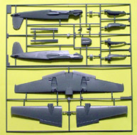
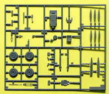
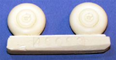

{kind=link}
{kind=link}
{kind=link}
{kind=link}
{kind=link}

Hasegawa 1/48 Henschel Hs-129B-3 Panzerknacker
Kit #9583
MSRP $42.95
Images and text Copyright � 2005/2008 by Matt Swan
Developmental Background
The Hs 129, often referred to by its nickname, the Panzerknacker (tank cracker), was developed to a 1937 requirement for a twin-engine ground attack aircraft mounting at least two 20mm cannons and with heavy armor for the pilot and engines. The initial prototypes, flown in 1939, were underpowered with their poorly performing Argus air-cooled in-line engines, and very difficult to fly. French Gnome Rhone 14 cylinder radial engines that produced more power and were a lot more reliable replaced the Argus engines. Having two engines helped improve survivability as well in case one was knocked out by ground fire.
The Hs 129 was designed around a single large "bathtub" of steel sheeting that made up the entire nose area of the plane, completely enclosing the pilot up to head level. Even the canopy was reinforced, with only tiny windows on the side to see out of and two angled 75mm blocks of glass for the windscreen. In order to improve the armor's ability to stop bullets the sides were angled in forming a triangular fuselage, resulting in almost no room to move at shoulder level. There was so little room in the cockpit that the instrument panel ended up under the nose below the windscreen where it was almost invisible, some of the engine instruments were moved outside onto the engine nacelles, and the gun sight was mounted outside on the nose.
Initially a special high velocity 20mm BK 101 cannon was the main armament of the B-1 versions along with a pair of 13mm and 20mm guns. This was upgraded to two MG17s and two MG 131s in the nose and a 30mm MK 103 with thirty rounds in the belly tray on B-2s. This was beefed up even further with the 37mm BK 3.7 which became the standard belly armament for the B-2 aircraft.
The Hs-129B2 came into Romanian service in 1943. It equipped the 8th Assault Group. It remained in the front line also after Romania joined the allies and contributed a lot to the war effort against Germany. It flew one of the last missions of the war in Europe against elements of the Vlasov Army, which refused to surrender after 9 May 1945, and "convinced" them to give up fighting. This is the airplane, which probably saved more Romanian ground troops from certain death than any other in ARR service throughout the entire war.
In an effort to be more effective against newer Russian tanks the armament was upgraded once again in early 1944 with a 75mm gun from the Panzer IV. A huge hydraulic system was used to damp the recoil of the gun, and an auto-loader system with twelve rounds was fitted in the large empty space behind the cockpit. The resulting system was able to knock out any tank in the world, but the weight slowed the already poor performance of the plane to barely flyable in this new Hs-129B-3 version. Only about 25 of this version were manufactured before production was shut down.
One additional improvement in the Hs-129 series was planned, the Hs-129C: This upgrade would have used two 627-kW Italian engines and had a limited traverse ventral turret with two 30mm Mk 103 cannons. The design was dropped after Italy surrendered and the engines became unavailable.
The Panzerknacker was not considered a good plane to fly; the cockpit was extremely cramped, the joystick was hard to use, it was overweight and underpowered. The Hs-129 was also slower and less agile than the Ju-87D resulting in vulnerability to interception by fighters. However, the armor and armament helped to make up for this. Despite these problems the 879 Hs-129s built proved important to Germany on the Eastern Front.
The Kit
Several years ago I built the Hs-129B-2 from Hasegawa and found it to be a gem of a kit. Unfortunately this model went MIA from a local hobby shop display. I clearly recall when I completed the build that I felt it should have had a bigger gun. At long last Hasegawa has fulfilled this obscure desire of mine with the recent release of the Hs-129B-3. Let�s start our review with a look at the packaging; all the sprues, parts and decals are contained in a single large poly bag. The resin, white metal, steel and clear parts are sealed in smaller bags within the main bag but all the gray injection molded pieces are allowed to abrade against each other. These guys could take a lesson in packaging from Dragon who has no hesitation in using multiple bags to protect the parts. All this is contained in the standard top opening, light duty cardboard box with wonderful graphics.
For the most part the gray injection molded pieces appear to be from the same molds as the B-2 kit with just a few minor changes. The exhaust stacks are of the short version, which is appropriate for most B-2 and all B-3 aircraft; the 37mm cannon pieces have been deleted from the kit. All the plastic pieces display crisply engraved panel lines and rivet detail. There are no obvious injector pin markings, sinkholes or flash evident on the parts. During a dry fit session the wing panels and fuselage pieces fit together very nicely and my recollection of the earlier B-2 construction is that no putty was needed at all.
Hasegawa seems to be pushing the envelope a wee bit with this kit in comparison to the other main stream manufactures by including a small package of resin parts and some mixed metal pieces. A single small bag contains the 75mm cannon housing, the 20mm machine gun faces and a few other small detail pieces in tan resin. They all appear to be of good quality with no visible air bubbles or warpage. There is quite a bit of fine flash around the smaller pieces and the pour stubs are not excessively large. The main shaft of the cannon barrel is made from machined steel in its own little bag and the muzzle is cast from soft white metal in its own little bag. While these two pieces look very cool they do not fit together well and will require some minor work with a fine drill.
Lastly we have the clear parts and spinner poly caps. There are only five pieces on the sprue of clear parts; the front armor glass, main canopy, reflective gun site, landing light and a marker lens. The canopy pieces have nice raised frame lines, show good clarity and fit the model very well. Along with the five clear pieces we have four spinner caps (only two are needed of course), one steel barrel, one white metal muzzle, seven resin pieces and 112 gray high pressure injection molded pieces for a grand total of 130 pieces in the box.


You may click on the above images to view larger pictures
Decals and Instructions
The instruction sheet is a classic eight panel fold-out. The cover panel shows three nice views of the completed model and contains a well done historical background of the aircraft in both Japanese and English. Three panels containing nine exploded view construction steps follow this. There are a few construction tips scattered through here along with plenty of color call-outs. The next panel contains a complete parts map of the sprues and a color chart listing paints by Gunze Mr. Color, Gunze Aqueous Color and by color name. Two panels are dedicated to two different exterior color schemes and decal placement for those two schemes. The final panel covers basic safety and construction tips.
As I just mentioned, we have decals for two aircraft here. Hasegawa decals are typically a little on the thick side so this should be taken into consideration during placement. Possible approaches would include stronger setting solutions, the use of Future as a setting solution or the application of hot compresses to make them conform better. Color density and print registry are very good. Included in the decals are two options for instrument panels if you do not care to paint the raised details on the part, spirals for the spinners, various service stencils and general markings for two aircraft. The aircraft represented are SG9 operating out of Poland, the subject of the box art, or SG9 operating out of Hungary with a more typical RLM 70/71 over 65 splinter pattern. Surprisingly this sheet includes complete swastika tail markings, none of this multi-part decal BS to pacify historical sensors.
Conclusions
Though not a commonly known aircraft it could very well be considered the predecessor of today�s A-10 Warthog. As with the previous releases of Hs-129 variants from Hasegawa this one is another gem of a kit. The pieces are clean, well designed and fit together very nicely. The instructions are clear and concise; the decals while slightly thick are comprehensive for the subject. There are a few things on the aftermarket that could be added to the kit; Czech Master at one time had three very nice detail packages aimed at the Hs-129 of which only the armament set is currently available. I imagine that the release of this kit will influence the reissue of the other CMK detail kits. Cutting Edge offers several mask sets and Eduard has a couple of PE detail sets. There are decals from EagleCal and Super Scale as well as additional pieces from Moskit, Hi-Tech, Falcon and True Details. The kit is very nice as is and will build into something unusual for your display or you can bust out your wallet and buy plenty of goodies to sooth those AMS urgings. I give this kit a good to very good recommendation.
Aftermarket Goodies
6/21/08
Many times over the last couple years I have pulled this kit from the stash, looked it over then replaced it with the firm assertion that I would build it some day. Well, that day has come. Two things have motivated me to start this; a returning customer of custom built models and a group-build on the forum that I decided to join. I�m going to do a little more than just build this kit though; I am going to build an Hs-129 B-2 and the Hs-129 B-3 in tandem and will take a closer look at many of the current aftermarket sets available for the kits. Now the B-2 kit is essentially the same kit as the B-3 it just does not have the resin and metal parts for the big gun. It does have some different decals which we will take a look at later and there is more than one boxing of the Hasegawa B-2 kit all with different marking options. A few things have happened since I did the initial review in 2005, no new-mold Hs-129 kits have been released but there are some new goodies and some reissues of goodies on the aftermarket and if you are deeply into the grasp of AMS (Advanced Modeler Syndrome) like I am you know you can never have enough goodies.
For the sake of general organization let�s address these goodies in an alphabetical order beginning with Airwaves #48077. Airwaves has a single small fret of photo etched interior details for the 129 but it is hard to find and usually a special order item with most shops. Next up is CMK; they have four different sets available for the 129 beginning with interior detail set #4066 which is a combination of resin and PE parts. This set provides for a new extended floor pan which is more accurate than the kit offering and includes the exposed fuel tank, tank cover, rudder pedals, acetate instrument details, armor plating, seatbelts and lots of other little detail items sure to make the front office very attractive. Next is the armament set #4067 which is another mixed set of PE, resin and acetate instruments. This set basically opens up one side of the gun bay, opens the survival gear bay and the ammo bay in the wing and gives you the exterior engine instruments and bezels. The third set from CMK is exterior set #4068 and it covers the basic flight control surfaces and two inner wing fuel tanks. The last set #4094 is an undercarriage set that provides for a lot of inner structural material inside the gear bays. These four sets will definitely keep the modeler busy and are all currently available from Great Models Webstore.
Next up are two sets from Eduard. The first set, #48166 is slightly lower priced and is for the old AMT/ESCI release of the Hs.129 and is no longer in production by Eduard. The second set, #48312 is just a little more expensive and fits the Hasegawa B-2 kit. It can still be used for the B-3 kit as almost everything would be the same. This set includes replacement sidewalls for the cockpit, armor plating, rudder pedals, seat belts and lots of bezels and levers. It also includes a set of acetate instrument details for inside the cockpit only. Eduard also makes a mask set for the kit but I generally do not use these mask sets unless the canopy is very large or very complex. Falcon Industries makes sets of vacuformed canopies that will cover multiple aircraft and set #0114 includes a canopy for the Hs.129. At one time Hi-Tech made a detail set for the Hs.129 that was a combination of resin and PE parts however that set does not seem to be around anymore and I think it was for the AMT/ESCI kit.
Model Point is generally known for their brass and steel work in the armor modelers world but they also make a variety of fittings for aircraft. One such fitting is the 3 cm cannon for the Hs-129. This set #MJ4810 can be used with either the ESCI or Hasegawa kit and is a good improvement over any plastic injection molded weapon. Quick Boost is another relatively new player in the game making more simplistic resin detail sets that capture a lot of detail but are easy to install and usually require little or no sub-assembly. Quick Boost offers an open gun bay, #QB48032 for the 129 that includes a well detailed access door and is much simpler than the CMK piece. Of course you do not get quite the level of detail that you get with the CMK piece but there is a lot less work involved. Also from Quick Boost is an open radio bay QB48037. Again, a simple and well detailed piece to install and something that I feel gives a better look than the radio bay from CMK or from Verlinden. Squadron has a long history of making replacement vac canopies for a wide range of models and the Hs-129 is well represented here. The Squadron set includes two canopies that display well defined frame lines and good clarity. With two pieces if you feel at all challenged by cutting them apart to display an open cockpit you have the security of a second piece available should you screw up � not that we ever screw up mind you.

You may click on these small images to view larger pictures
Also from Squadron under the True Details logo are some resin wheels. These are well done with just some slight weight to them and make a nice replacement for the basic plastic kit wheels. When I say slight weight I am referring to the tendency of some aftermarket manufactures to represent wheels that look like they are half flat and that the airfield mechanic should be reprimanded for failing to check the tire pressure. The True Details wheels look right. So far almost all the accessories I have been talking about focus on the cockpit, flight controls and access hatches, next up is an engine set from Vector. Vector is a relatively new aftermarket company that specializes in 1/72 and 1/48 resin engine sets for WW1 and WW2 piston engine aircraft. Their engine sets are more appropriately called kits as they are indeed kits all by themselves. Vector kit #48031 is an excellent representation of the Gnome-Rhone GR-14M4/5 engine used in almost all Hs-129s. The set includes wonderfully detailed individual cylinders, excellent crank case and separate exhaust manifolds. The only thing the kit does not include is the fine solder or wire to make the push rods with. I have not assembled one of these yet to see if they will fit into the nacelle or not but have high hopes for them. For ordering information on Vector engines in the Americas you can go to Sprue Brothers or if you are in Europe you can go to Neomega Resin.
You may click on these small images to view larger pictures
The last aftermarket set I want to talk about is the Verlinden set #1551 Hs.129 B-2 update set. This is a fairly comprehensive set that includes lots of resin stuff such as one complete engine along with open engine access ports, lots of cockpit goodies, flight control surfaces, open radio compartment and a replacement seat with seatbelts molded in place. The set also includes a sheet of lead foil with instructions on cutting your own seatbelts but they do not include any separate PE parts such as belt buckles. The instrument panel with this set is a resin piece with raised instrument detail as opposed to the acetate details that the other cockpit sets offer. Overall this engine does not come up to the standards set by Vector however this one does include an exhaust collective which the Vector kit does not.
Okay boys and girls, there you have all the goodies to consider for your ultimate AMS needs. Which one or ones are the best to get? Sorry, but I cannot answer that question. You will need to consider just how much detail you want to represent, how much work and how much money you care to spend on your project to determine that. For myself I think the best results are going to be achieved by combining bits and pieces from several different sets and this is most likely the most expensive option. On the bright side I will have lots of spare parts heading to the parts graveyard and after all, I am building two kits here so should get a good amount of use from all this stuff. In truth I have already had a great time just playing with the detail sets. One thing I have not mentioned is that there are also several different decal sheets out there for your consideration but I�m not going into those here. Just one final note on all these cool aftermarket pieces, especially the cockpit stuff, this aircraft had a small, cramped cockpit and even with the canopy open you will have a hard time seeing all the neat stuff you have slaved over to install. Enjoy that AMS.
Construction
Before I launch into the actual construction let me address the differences between the Hasegawa kits. Essentially there are three different Hs.129 kits by Hasegawa; first is kit #09360 which is the Romanian version with bombs mounted on the belly rather than a gun pack. This kit includes three small sprues not found in any of the other kits which contain a belly rack for four bombs and parts to construct those four bombs. Here you can see the decals for that kit and the three additional sprues and you can click on those images for a larger picture. This kit does include the gun pack found in both the other kits. Next is kit #09743 which is the Luftwaffe Schlachtgeschwader 2 with the gun pack.  This kit contains all the same plastic pieces that are found in the B-3 kit reviewed at the beginning of this article and includes a small sprue containing a belly gun pack as seen at right. It does not include any of the resin parts for the 3 cm cannon and of course it contains yet another different sheet of decals which an image of will be here shortly. And obviously the third kit is #09583 of the Panzerknacker initially reviewed here.
This kit contains all the same plastic pieces that are found in the B-3 kit reviewed at the beginning of this article and includes a small sprue containing a belly gun pack as seen at right. It does not include any of the resin parts for the 3 cm cannon and of course it contains yet another different sheet of decals which an image of will be here shortly. And obviously the third kit is #09583 of the Panzerknacker initially reviewed here.
I�m still kind of formulating my overall construction plan but I have enough figured out to start work inside the cockpit of the Romanian B-2 kit. The original kit sidewalls are removed and the new Eduard panels are super glued in place then everything gets a base coat of RLM-66. I installed the right upper control quadrant also but have to paint the left separately as it will contain some acetate instrument details. I did not place all the various panels prior to painting as I think I will be airbrushing some of them black to add some interior contrast, more on that later.
8/16/08
I spent small amounts of time over a couple weeks completing the cockpit. The Eduard set replaced the seat and several side panel parts as well as the instrument panel and provided a myriad of small levers to dress up the side panels. I painted several small panels flat black to give some relief to the overall black-gray and used various Testors enamels to color the details. The instrument panel was fairly standard assembly being glued together with Future floor polish which also created the lens effects over the dials. The completed cockpit tub slid into the fuselage quite nicely and everything closed up without difficulty.
Once the fuselage was together things started moving pretty fast with the build. The wings and engine assemblies went together nicely however I did shave off the external engine instruments as those will be replaced with photo etched parts later. I added some magnet wire to the landing gear struts as brake lines and installed them to the wings. I elected to glue the engine cowlings and exhaust shrouds in place now and paint the finer detail by brush once the main camouflage scheme was complete. The Eduard PE set did include a few exterior items which were placed at this time. One piece that puzzled me was a small upper fuselage hatch that the Eduard instructions indicated would replace a small rectangular plastic piece. This was way too small for the intended hole so I added the plastic part then overlaid the PE part on top � looked good to me when completed so I will not worry any further about it. At this point the main wheels are not glued to the struts, just there to check the aircraft�s stance.
Now it�s time to start the paint process. All openings were filled with slightly damp tissue paper first then the kit was primed with Mr. Surfacer 1200. I used Testors flat black enamel to preshade all the panel lines then applied the yellow identification bands. The kit does provide a decal for the fuselage band but I preferred to paint this marking. Once the yellow had dried it was masked off and the RLM-65 lower colors were applied.
I masked the sides of the engine nacelles and the areas below the stabilizer before proceeding with some RLM-71. Once this was applied I followed it with some lightened RLM-71 to create panel fade. The model was allowed to dry for several days before the final masking extravaganza began. The upper splinter camouflage was masked off with strips of masking tape then RLM-70 was applied. Just as I did with the RLM-71 some paint was lighted with white then dusted over the panel centers to create fade. Now the masks and tissue could be removed. It does not take long to tell the story of painting but the reality was about seven or eight days of modeling � mostly consumed with dry time and masking.
I did have just a little bit of paint bleed around the stabilizers which was fixed with a brush. I painted the exhaust shrouds with some Model Master rust but find that color to be way too bright, I�ll be repainting those once everything has a chance to dry down some more.
9/21/08
I actually finished this one several weeks ago but since it was a commission build I did not want to post any final images until the kit arrived at it�s destination. I didn�t want to spoil the suspense for the customer. The exhaust shrouds were repainted with Model Master Burnt Iron then the model was sealed with Future. Next the decals went in place and were sealed again with Future before a final sludge wash was applied. I have taken to mixing Polly Scale clear flat with Squadron�s Micro Flat for a final finish and that is exactly what was done here. The only thing different about the weathering from previous builds was using some very thinned rlm-66 to airbrush the basic exhaust stains which were then highlighted with some ground pastel chalks.

You may click on these small images to view larger pictures
The model survived shipment to the other side of the world utilizing the kit packing methods described in the �Tools and Tips� section of this site and yes, the customer loved the build.


{kind=link}
{kind=link}
{kind=link}
{kind=link}
{kind=link}
{kind=link}
{kind=link}
{kind=link}
{kind=link}
{kind=link}
{kind=link}
{kind=link}
{kind=link}
{kind=link}
{kind=link}
{kind=link}
{kind=link}
{kind=link}
{kind=link}
{kind=link}